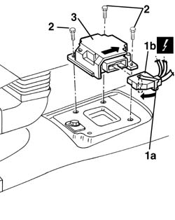
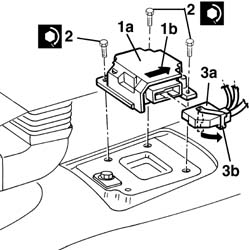
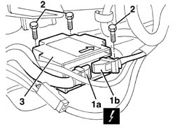
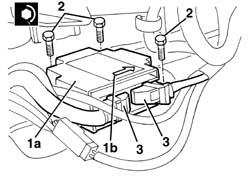

5580C14 air bag ecu - r+r
- Path
- Procedures > 55 ELECTRICAL EQUIPMENT > 5580 SPECIAL ACCESSORIES > 5580C air bag system > 5580C14 air bag ecu - r+r
- Kind
- repair procedure (removal / refitting; the operation number is the code)
- Applies to
- all engines; all production periods
- Interactive page
- https://sloeber94.github.io/elrnDB-a156/en/#/3238526
Applies to: all engines; all production periods
Applies to: all engines; all production periods
 Removing
Removing
 Refitting
Refitting7040A65 passenger compartment box lock , one , r r (Right side)
- 5010B44 rear seat air duct - arrange (Right side)
1. Rotate the safety bracket (1a) in the direction of the arrow and disconnect the electrical connection (1b).
 | Name | Connector |
|---|---|---|
1b | Air bag control unit |
2. Unscrew the bolts
3. Remove the control unit.

Applies to: all engines; all production periods
Refitting
RemovingFollow these precautions:
1. Position the control unit (1a).
Make sure that the arrow (1b) on the upper surface of the control unit is pointing in the direction of travel.
2. Tighten the bolts to the recommended torque.
 | Fastening | Component | Ø | Value (daNm) |
|---|---|---|---|---|
- | Bolt | AIR BAG CONTROL UNIT | M6 | 0.8 |
3. Connect the electrical connection (3a) and secure it by rotating the safety bracket (3b) in the direction of the arrow.

Applies to: all engines; production: da 03/02 a 09/03, da 10/03
Removing
RefittingFollow these precautions:
7040A65 passenger compartment box lock , one , r r (left and right sides)
1. Disconnect electrical connections (1a), (1b).
| Name | Connector |
|---|---|---|
1a | Air bag control unit |
| Name | Connector |
|---|---|---|
1b | Air bag control unit |
2. Unscrew the bolts
3. Remove the control unit.

Applies to: all engines; production: da 03/02 a 09/03, da 10/03
Refitting
RemovingFollow these precautions:
1. Position the control unit (1a). Make sure that the arrow (1b) on the upper surface of the control unit is pointing in the direction of travel.
2. Tighten the bolts to the recommended torque.
| Fastening | Component | Ø | Value (daNm) |
|---|---|---|---|---|
2 | Bolt | AIR BAG CONTROL UNIT | M6 | 0.8 |
3. Connect the electrical connection.

Applies to: all engines; production: da 03/02 a 09/03, da 10/03
7040A65 passenger compartment box lock , one , r r (left and right sides)
Connect the battery.
Check the operation of the system using the Examiner or the other diagnostic equipment.
Topics linked from this page (5)
- 5580C air bag system
- 7040A65 passenger compartment box lock , one , r r
- M60 Air bag control unit
- M60A Air bag control unit ( AIR BAGS )
- M60B Air bag control unit ( PRETENSIONERS )
Topics that link to this page (9)
- 5020A10 heater box - r+r
- 5020A12 heater casing - r+r with facia removed
- 5020A50 heater radiator - r+r
- 5040C10 air conditioner box - r+r
- 5040C12 air conditioner housing - r r with facia disconnected
- 5040C50 air conditioner heater radiator - r+r
- 5505A26 bonnet wiring - r r
- 5505C30 under-facia wiring - r r
- 5505C31 under-facia wiring - r r